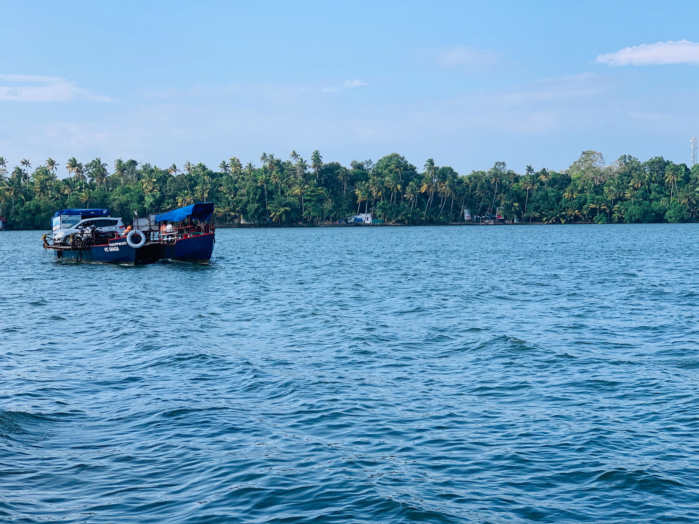
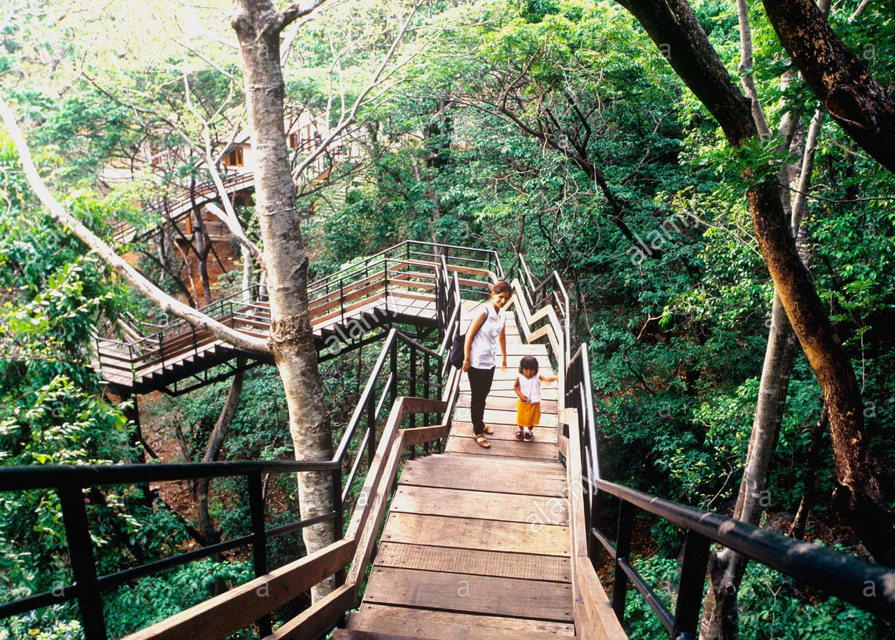

ASHTAMUDI BACKWATERS
Ashtamudi Lake, in the Kollam District of the Indian state of Kerala, is the most visited backwater and lake in the state

Mundro Island
Munroe Island or Mundrothuruthu is an inland island group located at the confluence of Ashtamudi Lake and the Kallada River, in Kollam district, Kerala, South India

Thenmala Ecotourism
Thenmala is an ecotourism site in Kerala, a state in southwest India. It lies just north of the Thenmala Dam, which spans the Kallada River